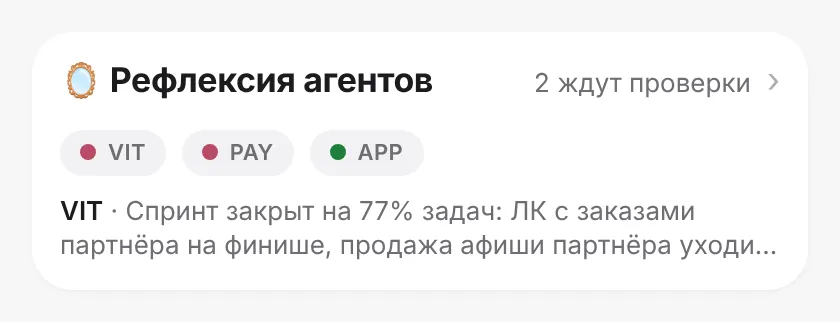
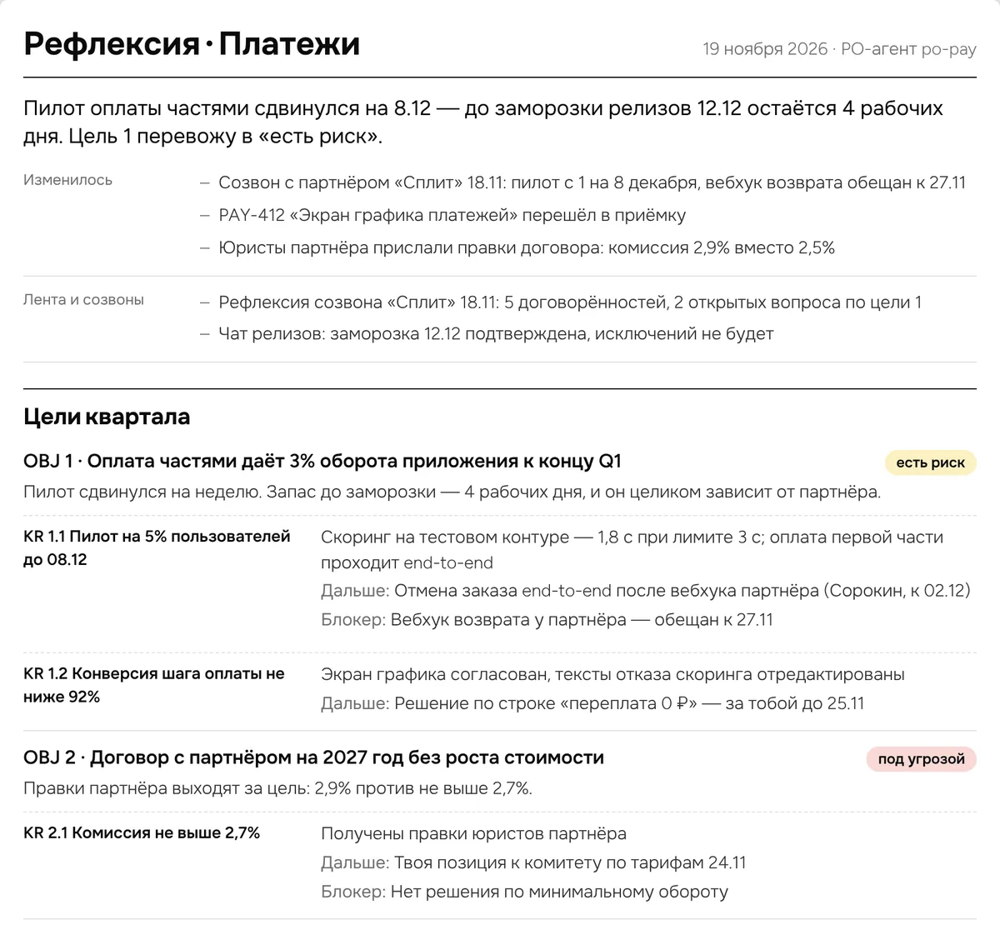
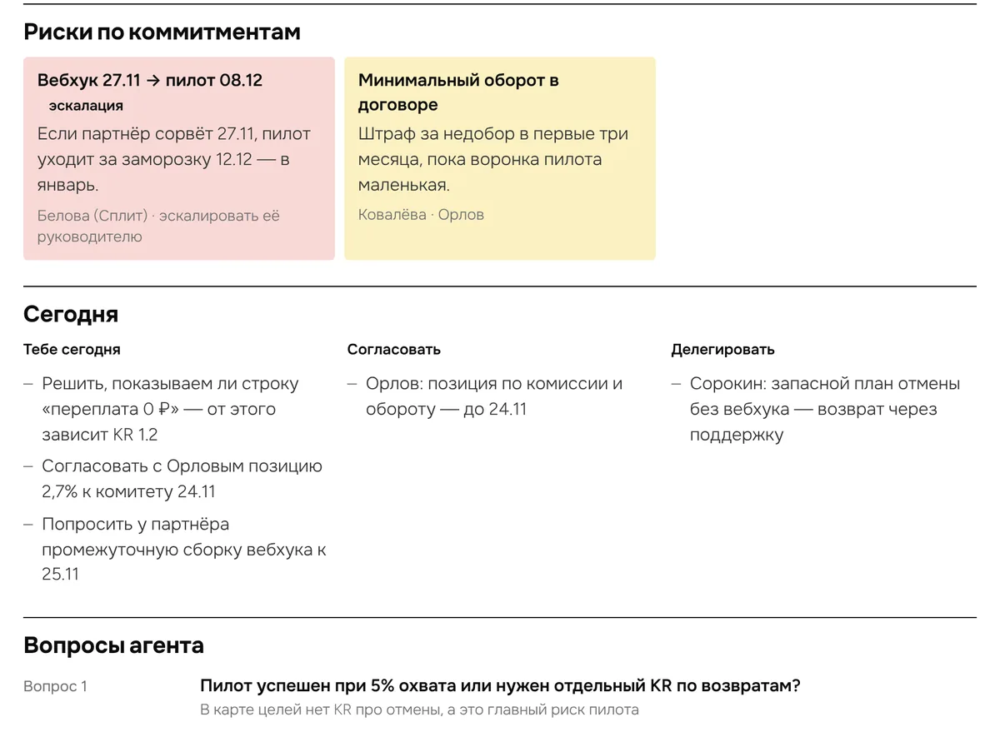
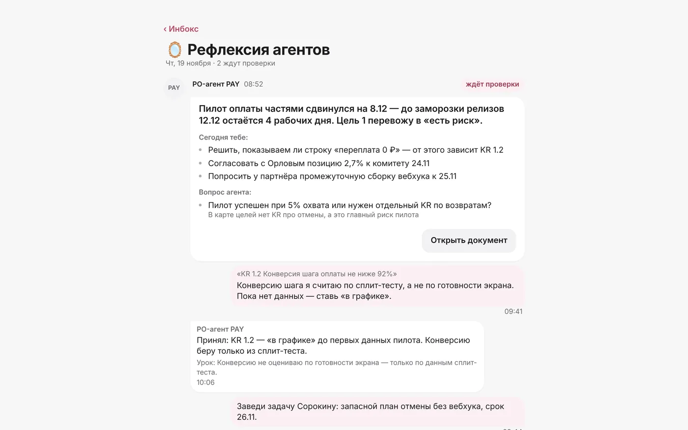
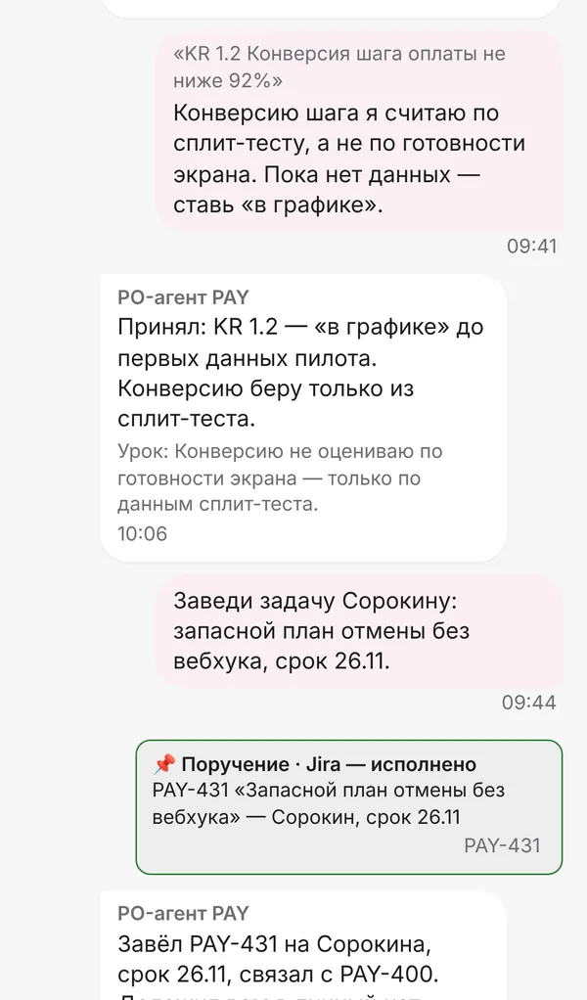

PO-АГЕНТЫ · УТРЕННЯЯ РЕФЛЕКСИЯ · КОММЕНТАРИИ
Рефлексия
ИИ-агентов
Утром агенты готовят рефлексию по ключевым пунктам движения к цели. Я комментирую расхождения — и наши картины сходятся.
Я знаю то, чего нет в Jira.
Агент видит то, что я не успел прочитать.
Проблема
Два знания о цели — и они расходятся каждый день
То, что сказано, но не записано
Решение комитета в коридоре. Звонок партнёру в понедельник. Что на самом деле важно руководству. Какой риск я уже снял, а какой — нет.
Всё, что записано, но не прочитано
Каждая задача в Jira, все чаты ленты, расшифровки созвонов, темп за три спринта, блокеры и сроки. Больше, чем я успеваю прочитать за неделю.
Без ежедневной сверки агент уверенно отвечает по своей половине картины, а я принимаю решения по своей.
Идея
Рефлексия — точка сверки, комментарий — канал выравнивания
Сдаёт свою картину
По целям квартала: что сдвинулось, что держит, какие риски, что мне сделать сегодня.
Читаю 5 минут
Ищу не ошибки, а расхождения: где картина агента не совпадает с моей.
Пишу, где не так
Одной фразой прямо под документом — с телефона, без формы и полей.
Учитывает
Комментарий сразу в его знании. Ответ, урок и правка — в ближайший проход.
Документ рефлексии — не отчёт для меня. Это способ показать мне, что агент понял, чтобы я мог поправить до того, как он ответит кому-то ещё.
Как выглядит утро
Рефлексии ждут меня к началу рабочего дня
- 08:30 — сборснимки Jira, блокеры, выпуск ленты, рефлексии созвонов за 3 дня
- 08:50 — каждый агент пишет свою рефлексиюу каждого своя минута; механику делает скрипт, смысл — модель
- 09:05 — страховканет рефлексии — её пишет Claude Code за агента, по тем же правилам
- Утро — карточка в Инбоксе«🪞 Рефлексия агентов · 2 ждут проверки»: тап — и я в чате с документами

Карточка на «Сегодня» в Инбоксе
Не успел агент — сорвавшийся прогон встаёт в очередь и повторяется. Пропуск не исчезает назавтра.
Что агент сдаёт
Ключевые пункты движения к цели
- Главное за сутки одной фразойи что изменилось со вчера
- Цели квартала: OBJ → KR«в графике», «есть риск», «под угрозой»; что сделано, что дальше, что держит
- Чем занят каждый в команде
- Риски по моим коммитментами кому эскалировать
- Сегодня тебе · согласовать · делегировать
- Вопросы агента — не больше трёх

Документ рефлексии · демо-данные
Правила агента
Агент пишет только то, что есть в данных
OBJ и KR — только из карты целей
Эпик без цели не привязывается догадкой: он становится вопросом мне.
Мои правки — факт
Что я поправил в бизнес-колоде или в комментарии, агент не переписывает и перечисляет в «Принято от PO».
Чего нет — «[УТОЧНИТЬ]»
Цифры, сроки и фамилии не берутся из головы. Не хватает данных — вопрос, а не уверенный тон.

Риски, «Сегодня», вопросы агента
Интерфейс
Экран «🪞 Рефлексия агентов»

Выравнивание
Комментарий бывает трёх видов — тип выбирать не нужно
«Партнёр не молчит: я звонил в понедельник»
Я знаю то, чего нет в системах. Агент исправляет картину и больше не считает молчание по одной Jira.
«Конверсию считаю по сплиту, не по экрану»
Как я оцениваю цель. Агент записывает это уроком и завтра оценивает KR моим способом.
«Заведи задачу Сорокину, срок 26.11»
Прямой приказ. Агент исполняет в Jira, календаре или моём «Я обещал» и докладывает лично.
Писать можно как в мессенджере: без шаблона, тегов и выбора типа.
Что происходит с комментарием
Комментарий становится знанием агента
Слова руководителя для агента — достоверный источник: он не перепроверяет их по Jira, а перестраивает по ним свою картину.
Поручение из комментария
Приказ в комментарии — со статусом, который я получу всегда

Ветка под документом
- «Заведи», «добавь встречу», «запиши в беклог» — прямой приказ распознаётся сам и становится поручением
- Исполняет там, где положено: задача в Jira, встреча в моём календаре, обещание в «Я обещал»
- Докладывает лично в мой чат: что сделано и где проверить
- Не доложил — контроль отбивается сам: через 10 минут «в работе», через 30 — «не выполнено» с причиной
Комментарий не теряется между «прочитал» и «сделал».
Попробуйте сами
Живой экран на демо-данных
- «Открыть документ» у PO-агента CAB
- Внизу напишите комментарий — например, «удаление аккаунта переносим на январь»
- Enter — комментарий встанет в ветку «передано агенту»
- Через несколько секунд агент ответит и запишет урок
- Начните с «Заведи…» — появится поручение со статусом
Это настоящий экран, только сервер подменён: люди, команды и задачи вымышлены, ответ агента в демо — шаблон.
Что меняется
В любом чате агент отвечает по общей картине
Второй ответ собран из рефлексии, рефлексии созвона с партнёром и двух моих комментариев. Ни одного из этих фактов не было в задаче пилота.
Честно о слабых местах
Что пока не идеально
Ответ не мгновенный
Комментарий сразу лежит в знании агента, а ответ «учёл» приходит в ближайший проход.
Ценность — в расхождениях
Документ — картина агента, а не истина. Если не читать его, сверки не случится.
Качество — от карты целей
Нет эпика в карте целей — агент спросит, и пока я не ответил, KR остаётся «без привязки».
Данные — снимок утра
Упал утренний сбор — рефлексия строится на вчерашних данных и пишет об этом в источниках.
Пять минут утром —
одна картина на день
Агенты приносят знание систем, я — знание людей и решений. Комментарий соединяет их, и дальше агент отвечает за меня по той же картине, что у меня в голове.
github.com/po-helper-org/poh-widget-call-reflection 🔒Откуда агент знает о созвонах: Рефлексия созвона →